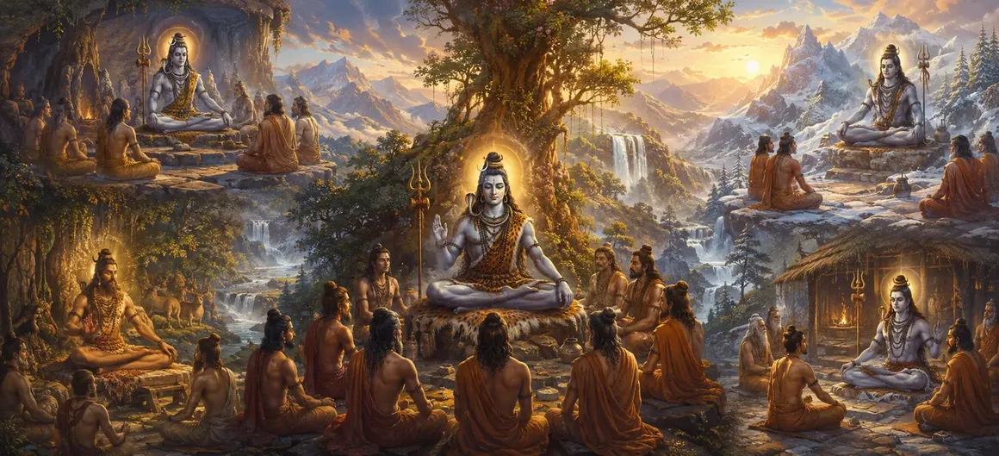

योग शिक्षक के रूप में शिव का अवतार
वायवीय संहिता का चौवालीसवाँ अध्याय योग के सर्वोच्च शिक्षक (योगाचार्य) के रूप में भगवान शिव की दिव्य अभिव्यक्तियों को प्रकट करता है।
ऋषि वायु बताते हैं कि कैसे भगवान ध्यानयोग्य मिलन और आत्म-साक्षात्कार के गहन विज्ञान में ईमानदार साधकों को निर्देश देने के लिए युगों-युगों तक भौतिक रूप धारण करते हैं।
यह अध्याय इस बात पर ज़ोर देता है कि सच्ची मुक्ति सीधे भगवान द्वारा सिखाए गए योग के अनुभवात्मक अभ्यास से प्राप्त होती है।
अध्याय 44 की मुख्य बातें
परम योगाचार्य
भगवान शिव को सभी योग प्रणालियों के मूल शिक्षक के रूप में जाना जाता है।
ध्यान संघ
आंतरिक अवशोषण और आध्यात्मिक फोकस के सिद्धांतों का विवरण।
ईश्वरीय मार्गदर्शन
दिखाता है कि कैसे शिव सच्चे अभ्यासियों के उत्थान के लिए प्रकट होते हैं।
अतिक्रमण
योग के माध्यम से भौतिक भ्रमों से परे जाना सिखाता है।
बुद्धि संचरण
ऋषियों को दी गई शिक्षाओं की वंशावली प्रस्तुत करता है।
कथा प्रवाह
भगवान शिव की भक्ति पर अध्याय 45 की ओर ले जाता है।
इस अध्याय में मुख्य विषय
भगवान शिव सभी योग के स्रोत के रूप में
ऋषि वायु बताते हैं कि भगवान शिव चेतना के आदि अवतार हैं और परम स्रोत हैं जहां से सभी प्रकार के योग की उत्पत्ति होती है।
उनकी कृपा के बिना, किसी भी अभ्यासी द्वारा मन और इंद्रियों पर नियंत्रण प्राप्त नहीं किया जा सकता है।
सर्वोच्च योग शिक्षक के रूप में अभिव्यक्तियाँ
विभिन्न युगों में, भगवान आध्यात्मिक अनुशासन के रहस्यों को प्रदान करने के लिए एक सर्वोच्च शिक्षक के रूप में जन्म लेते हैं या सीधे प्रकट होते हैं।
ये अवतार ध्यान और आंतरिक अनुभूति के मूलभूत मार्ग स्थापित करते हैं।
ऋषियों को उपदेश एवं मार्गदर्शन
महान संत सांस नियंत्रण, एकाग्रता और मानसिक शांति की जटिल तकनीकों को सीखने के लिए दिव्य शिक्षक के पास इकट्ठा होते हैं।
शिव धैर्यपूर्वक साधकों के सभी संदेहों को दूर करते हैं, उन्हें आत्मज्ञान की ओर कदम दर कदम मार्गदर्शन करते हैं।
ध्यान का परिवर्तनकारी विज्ञान
अध्याय इस बात पर जोर देता है कि योग केवल शारीरिक आसन नहीं है, बल्कि व्यक्तिगत आत्मा को परमात्मा से जोड़ने वाली एक कठोर आंतरिक यात्रा है।
ध्यान के माध्यम से, अभ्यासकर्ता भौतिक सीमाओं को पार कर जाता है और असीम आनंद का अनुभव करता है।
सांसारिक बंधन से मुक्ति
भगवान शिव की योग शिक्षाओं का पालन करके, साधक अज्ञान की गांठों को काट देते हैं और बार-बार जन्म और मृत्यु के भय पर विजय प्राप्त करते हैं।
यह सर्वोच्च ज्ञान आत्मा को सभी कष्टों से मुक्त कर देता है।
योग अवतार वृत्तान्त का निष्कर्ष
अध्याय 44 का समापन शिव की योग शिक्षाओं की सर्वोच्च प्रभावकारिता की प्रशंसा करते हुए हुआ, जिससे दर्शक प्रेरित और आध्यात्मिक रूप से उन्नत हुए।
एकत्र हुए ऋषिगण गहरी श्रद्धा के साथ इन गूढ़ सत्यों को आत्मसात करते हैं।
अध्याय 45 की ओर
योग शिक्षकों पर प्रवचन के बाद, ऋषि वायु अध्याय 45, 'भगवान शिव की भक्ति' सुनाने की तैयारी करते हैं।
यह अगला अध्याय सर्वोच्च भगवान की कृपा प्राप्त करने के अंतिम साधन के रूप में शुद्ध भक्ति की अद्वितीय शक्ति पर प्रकाश डालता है।
अध्याय 44 की मुख्य शिक्षाएँ
आदि गुरु
शिव सभी योग विज्ञानों के शाश्वत स्रोत और स्वामी हैं।
आंतरिक यात्रा
योग व्यक्तिगत आत्मा को सर्वोच्च चेतना से जोड़ता है।
बुद्धि संचरण
दिव्य शिक्षक सच्चे साधकों को ध्यान का निर्देश देते हैं।
भ्रम पर काबू पाना
ध्यान का अनुशासन अज्ञानता और सांसारिक बंधनों को नष्ट कर देता है।
परम स्वतंत्रता
अभ्यासकर्ताओं को चिरस्थायी शांति और मुक्ति की ओर ले जाता है।
अगला अध्याय
अध्याय 45 में भगवान शिव की भक्ति की ओर ले जाता है।
आध्यात्मिक चिंतन
जब हम सर्वोच्च शिक्षक के मार्गदर्शन के माध्यम से अपनी इंद्रियों को अंदर की ओर मोड़ते हैं, तो मन की अशांत तरंगें स्थिर हो जाती हैं, और भीतर आत्मा की शांत रोशनी को प्रकट करती हैं।
अध्याय 44 का संदेश जीना
ध्यानात्मक चिंतन और परमात्मा के साथ आंतरिक संवाद के लिए प्रतिदिन समय समर्पित करें।
बेचैन मन के उतार-चढ़ाव को नियंत्रित करने के लिए सचेतनता और अनुशासन का अभ्यास करें।
अपने आध्यात्मिक पथ पर भगवान शिव को सर्वोच्च मार्गदर्शक के रूप में स्वीकार करें।
प्रमुख आध्यात्मिक अवधारणाएँ
भगवान शिव योग के सर्वोच्च शिक्षक हैं।
ध्यान का पारलौकिक विज्ञान.
अभ्यास के माध्यम से मानसिक परिवर्तनों को शांत करना।
आध्यात्मिक मुक्ति का सीधा मार्ग.
दिव्य गुरु और साधक के बीच का पवित्र रिश्ता।
अध्याय 45 में भक्ति की प्रस्तावना.
अध्याय सारांश
वायवीय संहिता अध्याय 44 शिव के अवतारों को योग शिक्षक के रूप में प्रस्तुत करता है। इस अध्याय में विस्तार से बताया गया है कि कैसे भगवान शिव ऋषियों को ध्यान, सांस नियंत्रण और आत्म-साक्षात्कार में निर्देश देने के लिए सर्वोच्च योगाचार्य के रूप में प्रकट होते हैं, योग को मुक्ति के सीधे मार्ग के रूप में महत्व दिया गया है। यह अध्याय 45, 'भगवान शिव की भक्ति' के लिए मंच तैयार करता है।
अक्सर पूछे जाने वाले प्रश्न
1. वायवीय संहिता अध्याय 44 का प्राथमिक विषय क्या है?
अध्याय 44 में साधकों को आध्यात्मिक मुक्ति प्रदान करने के लिए योग के सर्वोच्च शिक्षक (योगाचार्य) के रूप में भगवान शिव के दिव्य अवतारों का विवरण दिया गया है।
2. भगवान शिव योग शिक्षक के रूप में क्यों प्रकट होते हैं?
वह ध्यानपूर्ण अनुशासन, आत्म-साक्षात्कार और सर्वोच्च निरपेक्षता के साथ मिलन के माध्यम से ईमानदार साधकों और संतों का मार्गदर्शन करने के लिए प्रकट होते हैं।
3. शिव के योग अवतारों का वृत्तांत कौन बताता है?
यह वृत्तांत वायु ऋषि द्वारा वायवीय संहिता में एकत्रित ऋषियों को समझाया गया है।
4. ये अवतार आध्यात्मिक साधकों को कैसे लाभान्वित करते हैं?
वे योग और ध्यान की प्रामाणिक विधियाँ प्रदान करते हैं, जिससे अभ्यासकर्ताओं को सांसारिक बंधन से परे जाने और दिव्य शांति प्राप्त करने में मदद मिलती है।
5. अध्याय 44 के बाद नेविगेशन के लिए अगला अध्याय कौन सा है?
नेविगेशन के लिए अगले अध्याय का शीर्षक 'भगवान शिव की भक्ति' है।
"सर्वोच्च योगाचार्य के रूप में, भगवान शिव ध्यान के मार्ग को प्रकाशित करते हैं, प्रत्येक ईमानदार आत्मा को भ्रम के अंधेरे से शाश्वत दिव्य प्रकाश में मार्गदर्शन करते हैं।"
वायवीय संहिता के माध्यम से जारी रखें
अध्याय 44 में योग शिक्षक के रूप में शिव के अवतार का समापन हुआ। भगवान शिव की भक्ति जारी रखें.